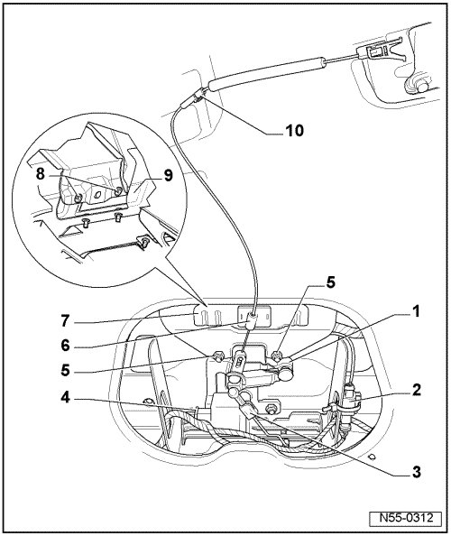

Locking and Unlocking Components
Rear Lid
Locking and Unlocking Components
Removing

- Remove the rear lid trim panel.
- Harness connectors - 2 - and - 4 - must be disconnected.
- Disengage the bracket - 6 - from the anti-theft protection - 7 - and unhook the cable - 10 - on the emergency release lever from the actuator lever - 1 -.
- Disconnect operating rod - 3 - from actuator lever - 1 - and unscrew the three hex nuts - 5 -.
- Remove anti-theft protection - 7 - and remove bolts - 8 - for push-button - 9 -.
- Now, push-button - 9 - can be removed from outside.
Installation
To install, perform the steps used for removal in reverse order.